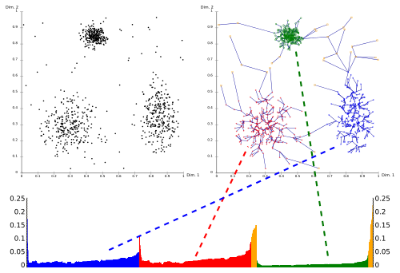

In der Vorlesung 'Analysetechniken für große Datenbestände' werden vor allem Association Rule Mining und Clustering-Techniken besprochen. Zum Association Rule minining ist vor allem der Apriori-Algorithmus sowie die Verbesserung mit FP-Trees zu nennen. Beim Clustering ist k-means, EM, DBSCAN, OPTICS und BIRCH von großer Bedeutung. Ein weiteres großes Kapitel sind Bayessche Netze.
Behandelter Stoff
Übersicht
| Datum | Kapitel | Inhalt |
|---|---|---|
| 20.10.2015, 08:00 | Einleitung (Folie 1-26) | Overfitting, Entscheidungsbäume, 1-Rules (→ Decision Strump), Outliers Mengenwertige Attribute, Kategorische Attribute, Zeitreihen Clustering Market Basket Analysis: Zusammenhang zwischen Waren Association rules (Apriori Algorithmus) |
| 20.10.2015, 11:30 | Einleitung, Statistische Tests (Folie 27 - 43) | Predictive Maintenance |
| 27.10.2015, 08:00 | Statistische Tests (Folie 38 - ) | $\chi^2$-Test, $\chi^2 = \sum_{i=1}^{m_1} \sum_{j=1}^{m_2} \frac{(h_{ij}- e_{ij})^2}{e_{ij}}$ mit erwartetem Wert $e$ (Sind zwei Zufallsvariablen unabhängig) Kolmogorov-Smirnov-Test (Sind 2 Verteilungen unabhängig; bei kontinuierlichen Zufallsvariablen) Wilcoxon-Mann-Whitney Test Bernoulli-Experiment (Folie 53?) Datenreduktion (Attribute entfernen, z.B. PCA; Datensätze entfernen, z.B. Clustering; Attributsgenauigkeit reduzieren) Diskretisierung: Zielfunktion ist Information Gain. Dieser soll minimiert werden. |
| 03.11.2015, 08:00 | Räumliche Indexstrukturen | Widerholung der Statistischen Tests |
| 03.11.2015, 11:30 | Entscheidungsbäume, Evaluation (1-18) | Split-Attribute, Pruning; Loss-Funktionen |
| 17.11.2015, 08:00 | Evaluation (19-47) | Qulitätsmaße (Korrelationskoeffizient) |
| 17.11.2015, 11:30 | Evaluation, Association Rules (1-26) | 41 min Evaluation, dann Association Rules. Frequent Itemset, Apriori-Algorithmus |
| 24.11.2015, 08:00 | Kapitel 6: Association Rules (12-Ende), Kapitel 7 (1-12) | Apriori-Algorithmus, Hash-Tree, Multidimensionale Association Rules, Level-Crossing-Association Rules, FP-Trees |
| 01.12.2015, 08:00 | Kapitel 7, Kapitel 8 (Pattern Mining mit Constraints) | Korrekturen zu Kapitel "Evaluation"; Wiederholung von Apriori-Algorithmus und Hash-Filter; ab Minute 27 FP-Trees |
| 01.12.2015, 11:30 | Kapitel 8 (Pattern Mining mit Constraints), Kapitel 9 (Clustering) | Meta-Rule-Guided Mining, Anti-Monotonizität, Support-basiertes Pruning, Constrained Sequences, Clustering Criterion Function |
| 15.12.2015, 08:00 | Kapitel 9 (Clustering) | k-means; CF-Trees |
| 15.12.2015, 11:30 | Kapitel 9 (Clustering) | CF-Trees; Hierarchisches Clustern mit Minimum Spanning Tree; DIANA; Hochdimensionale Merkmalsräume |
| 08.12.2015, 08:00 | R-Übung | - |
| 19.01.2016, 08:00 | Kapitel 9 | Jaccard Koeffizient, ... |
| 19.01.2016, 11:30 | Kapitel 9; Kapitel 10 (1 - ) | EM-Algorithmus; Generative Modelle |
| 26.01.2016, 08:00 | Übung | - |
| 26.01.2016, 11:30 | Kapitel 10 | Regression |
| 02.02.2016, 08:00 | Kapitel 10 | Logistische Regression, Cross Entropy |
Einleitung
Slides: 1-Einleitung.pdf
- Aufgabentypen
- Klassifikation
- Clustering
- Finden von Association Rules
- 1-Rule (Decision stump)
- 1-Rules ist ein Klassifikationsverfahren. Jedes Attribut wird für sich betrachtet. Es wird anhand von dem Attribut gesplittet, bei dem die Fehlerquote am geringsten ist.
- Clustering
- Suchen von Punkten, die nahe bei einander liegen.
Unterschiede:
- Attribute: Abstandsmaße
- Form
- Dichte
- Größe
- Zeitlicher Aspekt: Alte Daten weniger wichtig
- Alternate Clustering
- Association Rules
- Association Rules sind Regeln der Form:
Wenn eine Transaktion A enthält, dann auch B (formal: $A \Rightarrow B$).
Association rules werden z.B. in der Market Basket Analysis eingesetzt. Sie können aus Frequent item sets relativ einfach erzeugt werden.
Der Apriori Algorithmus dient dem Finden von Association Rules.
Association Rules sind stark mit Collaborative filtering verwandt. - Predictive Maintenance
- Ziel: Für Motoren will man vorhersagen, wann diese einen Fehler aufweisen
und damit gewartet werden müssen.
Dabei gibt es zwei Fehlerarten, die unterschiedliche hohe Kosten
aufweisen:
- Ausfall wird vorhergesagt, tritt aber nicht ein: Unnötige Wartung
- Ausfall wird nicht vorhergesagt, tritt aber ein: Teurer Ausfall
- Change detection
- Erkennung wesentlicher Veränderungen in einer Zeitreihe.
Statistische Grundlagen
Slides: 2-statistGrundlagen.pdf
- Skalen von Merkmalen
- Siehe Mustererkennung
- Kennzahlen für Daten
-
- Median / Mean
- Min / Max
- Quantile
- Varianz / Streuung
- Outlier
- Metrische Daten
- Ein Metrischer Raum ist eine Menge $M$ mit einer Funktion
$d: M \times M \rightarrow \mathbb{R}_0^+$ für die gilt:
- Symmetrie: $\forall p,q \in M: d(p, q) = d(q, p) $
- Definitheit: $\forall p,q \in M: d(p, q) = 0 \Leftrightarrow p = q$
- Dreiecksungleichung: $\forall p,q,r \in M: d(p, r) \leq d(p,q) + d(q, r)$
- Aggregatfunktion
- Eine Funktion, welche als Eingabe eine Menge von Werten erwartet und
einen Wert ausgibt (z.B. SUM, COUNT, MIN, MAX, AVG, MEAN,
häufigster Wert, Truncated Average, mid range).
Aggregatfunktionen sind entweder distributiv, algebraisch oder holistisch. - Distributive Aggregatfunktion
- Es gibt eine Funktion $G$, so dass $$F(\{X_{i,j}\}) = G(\{F(X_{i,j} | i=1, \dots, l) | j = 1, \dots, J\})$$ MIN, MAX und COUNT sind distributive Aggregatfunktionen.
- Algebraische Aggregatfunktion
- Es gibt eine Funktion $G$, die ein $M$-Tupel liefert und $H$,
so dass
$$F(\{X_{i,j}\}) = H(\{G(\{X_{i,j} | i=1, \dots, l\}) | j=1, \dots, J\})$$
AVG ist eine Algebraische Aggregatfunktion. Hier berechnet $G$ die
Summe und gibt zusätzlich die Anzahl der Werte zurück. $H$ summiert
die Summen auf und teilt das Ergebnis durch die Gesamtzahl.
Weitere: Truncated Average - Holistische Aggregatfunktion
- Man kann keine Beschränkung des Speicherbedarfs für Sub-Aggregate,
d.h. Aggregate über $\{X_{i,j}| i=1, \dots, l\}$, angeben.
Der häufigste Wert und der Median sind holistische Aggregatfunktionen. - Self-Maintainable Aggregatfunktion
- Wenn man den aktuellen Wert der Aggregatfunktion kennt und man löscht
einen Wert bzw. fügt einen Wert ein, dann kann man direkt den neuen
Wert der Aggregatfunktion über den angepassten Datenbestand berechnen.
Nicht-self-maintainable ist der häufigste Wert.
MIN und MAX ist self-maintainable bzgl. Einfügen. - Mid-Range
- $$\frac{MAX-MIN}{2}$$
- Entropie
- $$E(S) = - \sum_{j} p_j \cdot \log p_j$$ $E(S)=0$ ist minimal, wenn es ein $j$ gibt mit $p_j = 1$. $E(S)=\log(n)$ ist maximal, wenn $p_i = p_j$ gilt für $i, j$.
- Korrelationsmaße
- Sind üblicherweise auf [-1, 1] normiert. Die Kovarianz ist ein nicht-normiertes Korrelationsmaß.
- Kovarianz
- $$\operatorname{Cov}(X,Y) := \operatorname E\bigl[(X - \operatorname E(X)) \cdot (Y - \operatorname E(Y))\bigr]$$
- Korrelationskoeffizient
- $$\varrho(X,Y) =\frac{\operatorname{Cov}(X,Y)}{\sigma(X)\sigma(Y)} \in [-1, 1]$$
- PCA (Principal Component Analysis)
- PCA ist ein Algorithmus zur Reduktion von Daten durch das Entfernen von Attributen. Er projeziert die Datenobjekte auf eine Hyperebene, sodass ein Maximum der Varianz beibehalten wird (vgl. Neuronale Netze)
- Chi-Quadrat-Test
- Oberbegriff für mehrere Tests; hier nur der Unabhängigkeitstest.
Gegeben sind zwei Verteilungen von Zufallsvariablen $X, Y$. Die Frage ist, ob sie unabhängig sind.
Dazu zählt man die Ausprägungen $i=1, \dots, m_1$ des Merkmals $X$ und die Ausprägungen $j=1, \dots, m_2$ des Merkmals $Y$ sowie wie häufig diese in Kombination auftreten ($n_{ij}$). Man schätzt den erwarteten Wert durch $e_{ij} = \frac{1}{n} \left(\sum_{k=1}^{m_2} n_{ik} \right) \cdot \left (\sum_{k=1}^{m_2} n_{kj}\right )$. Der Chi-Quadrat wert ist dann: $$\chi^2 = \sum_{i=1}^{m_1} \sum_{j=1}^{m_2} \frac{(n_{ij} - e_{ij})^2}{e_{ij}}$$ Daraus wird ein $p$-Wert abgeleitet. Wenn dieser unter einem Schwellwert wie $\alpha = 0.01$ ist, dann wird die Hypothese, dass die Verteilungen unabhängig sind, zurückgewiesen. Die Nullhypothese, dass $X, Y$ unabhängig sind wird auf dem Signifikanzniveau $\alpha$ verworfen, falls $$\chi^2 > \chi^2_{(1-\alpha; (m_1-1)(m_2-1))}$$ - Kolmogorow-Smirnow-Test (KSA-Test)
- Test auf unabhängigkeit kontinuierlicher Verteilungen, also: $$H_0: F_X(x) = F_0(x)$$ Es wird die empirsche Verteilungsfunktion $S$ gebildet und diese mit der hypothetischen Verteilungsfunktion $F_0$ verglichen, wobei $S(x_0) = 0$ gesetzt wird: $$d_{\max} = \max(\max_{i=1, \dots, n}|S(x_i) - F_0(x_i)|, \max_{i=1, \dots, n} |S(x_{i-1} - F_0(x_i))|)$$ $H_0$ wird verworfen, wenn $d_{\max} > d_\alpha$, wobei $d_\alpha$ bis zu $n=35$ tabelliert vorliegt. Bei großerem $n$ kann näherungsweise $$d_\alpha = \sqrt{\frac{-\frac{1}{2} \ln(\frac{\alpha}{2})}{n}}$$
- Wilcoxon-Mann-Whitney-Test ($U$-Test)
- Es seien $X,Y$ Zufallsvariablen mit Verteilungsfunktionen
$F_X(x) = F_Y(x-a)$ für ein $a \in \mathbb{R}$.
$H_0: a = 0$ vs $H_1: a \neq 0$
Vorgehen: Gemeinsame Stichprobe sortieren, Rangsumme für $X$ und $Y$ bilden, Betrag der Differenz mit Tabelleneintrag vergleichen. - Datenreduktion
-
- Numerosity Reduction: Reduziere die Anzahl der betrachteten
Datenobjekte
- Parametrische Verfahren: Nehme eine bekannte Wahrscheinlichkeitsverteilung der Datenobjekte an und schätze deren Paramter. Arbeite dann nur mit der Verteilung
- Nichtparametrische Verfahren: Sampling, Clustering, Histogramme
- Dimensionality Reduction: Reduziere die Anzahl der Attribute.
- Forward Feature Construction: Starte nur mit einem Feature und gebe dem Classifier so lange neue Features, bis die gewünschte Genauigkeit erreicht wurde.
- Feature Elimination: Starte mit allen Features und entferne so lange Features, wie die gewünschte Genauigkeit erhalten bleibt.
- PCA
- Diskretisierung: Reduziere die Werte pro Attribut.
- Numerosity Reduction: Reduziere die Anzahl der betrachteten
Datenobjekte
- Visualisierung von Daten
-
- Boxplots: Whiskers
- Histogramme: Nicht geeignet für viele Dimensionen.
- Dendogramme
- Grundbegriffe der Wahrscheinlichkeitstheorie
-
- Wahrscheinlichkeitsraum
- Ereignis
- Ergebnis
- Ergebnismenge $\Omega$
- Wahrscheinlichkeitsmaß
- Kovarianzmatrix
- Bernoulli-Experiment
Räumliche Indexstrutkuren
Slides: 3-Informatik-Grundlagen.pdf
- B+-Tree (see YouTube)
- A balanced search tree.
- Index
- Beschleunigung der Suche von linearer Suchzeit auf logarithmische durch B+-Bäume.
- Anfragetypen
-
- Punkt-Anfragen: Ist ein Punkt im Datensatz?
- Bereichs-Anfragen: Ist mindestens ein Datenobjekt im gegebenen Bereich?
- Nearest-Neighbor-Anfragen (NN-Anfragen): Was ist das nächste Datenobjekt zu einem gegebenen Punkt?
- kD-Baum
- Siehe Computergrafik.
- kDB-Baum
- Ein balancierter kD-Baum. Die Balancierung wird durch eine Kombination aus heterogenem k-d-Baum und B*-Baum erreicht. Der baum ist also nicht auf logischer, sondern nur auf physischer Ebene balanciert.
- R-Baum
- Ein R-Baum ist ein balancierter Baum, welcher die Datenobjekte in
minimale AABBs
einschließt. Jeder Knoten hat eine solche AABB und jedes der Kinder -
egal ob es wieder ein AABB oder Datenpunkte sind - ist darin.
Diese AABBs können sich überschneiden.
Siehe auch: What is the difference between a R-tree and a BVH? - Nearest Neighbor in R-Tree
- Siehe Pseudo-Code.
Entscheidungsbäume
Slides: 4-Entscheidungsbaeume.pdf
Dieses Kapitel beschäftigt sich mit der Klassifikation mit Entscheidungsbäumen.
- Qualitätskriterien für Entscheidungsbäume
-
- Ergebnisqualität
- Kompaktheit: Je kompakter der Baum, desto besser kann die Entscheidung vom Benutzer nachempfunden werden.
- Wahl der Split-Attribute
- Entropie eines Splits minimieren: $$E(S_1, S_2) = \frac{n_1}{n} E(S_1) + \frac{n_2}{n} E(S_2)$$
- Overfitting
- Entscheidungsbaum ist zu sehr an Trainingsdatenbestand angepasst
- Prepruning (Forward pruning)
- Schon beim Erstellen des Entscheidungsbaumes wird ab einer gewissen Tiefe abgebrochen
- Postpruning (Backward pruning)
- Der Entscheidungsbaum wird komplett aufgebaut, aber dannach wird greprunt.
Evaluation
Slides: 5-Evaluation.pdf
- Resubsitution Error
- Trainingsfehler
- $k$-Fold Cross-Validation (Kreuzvalidierung)
- Unterteile den Datensatz in $k$ Teile. Dabei sollten die Klassen in etwa gleich häufig in allen Teilen vorkommen. Mache nun $k$ durchläufe, wobei der $k$-te Datensatz immer zum Testen und alle anderen zum Trainieren verwendet werden. Berechne die $k$ Testfehler. Mittle diese am Ende. Das ist ein besserer Schätzwert für den realen Fehler als eine einmalige Unterteilung in Training- und Testmenge.
- Stratification
- Sicherstellen, dass bestimmte Eigenschaften (z.B. Klassenzugehörigkeit) in Partitionen etwa gleich verteilt ist.
- Loss function
- Eine Funktion, die angibt, wie viel man durch eine unkorrekte Vorhersage verliert.
- Informational Loss function
- $$- \log_2 p_i$$ - Wahrscheinlichkeiten der nicht-eintretenden Klassen spielen keine Rolle
- Quadratic Loss function
- $$\sum_{j} (p_j - a_j)^2$$ mit tatsächlichem Label $a_j \in \{0,1\}$ und geschätzter Wahrscheinlichkeit $p_j$ für die Klasse $j$.
- Bias
- Das Verfahren an sich funktioniert nicht gut. Selbst beliebig viele Trainingsdaten beheben dieses Problem nicht. Der Fehler ist inhärent im Verfahren verankert.
- Varianz
- Fehler welcher durch das Fehlen von Trainingsdaten verursacht wird.
- Gesamt-Erfolgsquote
- $$\frac{TP+TN}{TP+TN+FP+FN}$$
- Konfusionsmatrix (Confusion matrix)
- Eine Tabelle, in der jede Zeile für die tatsächlichen Klassen stehen und die Spalten für die vorhergesagten Klassen. Die Diagonalelemente zählen also die richtig vorhergesagten Datenobjekte; alle anderen Zellen zählen falsche Vorhersagen.
- Kappa-Koeffizient (Cohens Kappa)
- Vergleich mit Klassifier, der nur den Anteil der Klassenzugehörigkeit schätzt: $$\kappa =\frac{p_0-p_c}{1-p_c}$$ wobei $p_0$ die gemessene Übereinstimmung ist und $p_c$ die erwartete Übereinstimmung bei Unabhängigkeit. Wenn also $h_{ij}$ die Anzahl der Datenobjekte ist, für die der erste Klassifizierer die Klasse $i$ und der zweite Klassifizierer die Klasse $j$ vorhergesagt hat sowie $N$ die Gesamtzahl der Datenobjekte und $z$ die Gesamtzahl der Klassen, dann gilt: $$p_0 = \frac{\sum_{i=1}^z h_{ii}}{N}$$ Die erwartete Übereinstimmung $p_c$ wird über die Randhäufigkeiten geschätzt: $$p_c = \frac{1}{N^2} \sum_{i=1}^z h_{.i} \cdot h_{i.}$$ Der Wertebereich ist also: $\kappa \in (-\infty; 1]$, wobei der minimale Wert von $\kappa$ nicht beliebig klein werden kann.
- Lift-Faktor
- Faktor, um den sich die Rücklaufquote erhöht: $$\mathrm{lift}(X\Rightarrow Y) = \frac{ \mathrm{support}(X \cup Y)}{ \mathrm{support}(X) \cdot \mathrm{support}(Y) }$$ Der Lift ist ein Indiz für die Unabhängigkeit von $X$ und $Y$. Ist der Lift nahe bei 1, dann spricht das für die Unabhängigkeit. Ein Lift-Faktor kleiner als 1 bedeutet, dass die Itemsets zusammen seltener vorkommen als bei Unabhängigkeit zu erwarten wäre. Ein Lift-Faktor von größer als 1 bedeutet, dass die Itemsets zusammen häufiger vorkommen als bei Unabhängigkeit zu erwarten wäre.
- ROC (Receiver Operator Characteristic)
- x-Achse: $\frac{FP}{FP+TN} \cdot 100$ (FP-Rate),
y-Achse: $\frac{TP}{TP+FN} \cdot 100$ (TP-Rate) Siehe auch: Namensherkunft - Recall (True Positive Rate, TPR, Sensitivität)
- $$TPR = \frac{TP}{TP + FN} = 1 - FNR \in [0, 1]$$ Der Recall gibt den Anteil der erkannten positiven aus allen positiven an. Sensitivität ist ein in der Medizin üblicher Begriff.
- Precision (Genauigkeit)
- $$Precision = \frac{TP}{TP + FP} \in [0, 1]$$ Die Precision gibt den Anteil der real positiven aus den als positiv erkannten an.
- F-Measure (F1 score)
- $$\frac{2 \cdot \text{precision} \cdot \text{recall}}{\text{recall} + \text{precision}}$$
- Correlation Coefficient
- Der Correlation Coefficient ist kein Fehlermaß. Der $CC(p, a)$ ist groß, wenn sich $p$ und $a$ ähnlich sind. $$CC(p, a) = \frac{COV(p, a)}{\sigma(p) \cdot \sigma(a)}$$ Mit $\sigma(x) = \frac{1}{n-1} \cdot \sum_{i} (x_i - \bar{x})^2$
- Code
- Abbildung, die jedem Element des Alphabets eine Folge aus 0en und
1en zuweist.
Beispiele:
- Morse-Code
- Unicode
- Ascii-Code
- Minimum Description Length (MDL)
- Minimale Länge zum Beschreiben des Modells.
Weiteres:
- Qualitätsmaße für numerische Vorhersagen
Fragen:
- Folie 23: Wo kommt die 140 her?
→ Summe der Diagonalelemente auf Folie 21. - Folie 27: Lift Faktor ist 2 wenn man nur die 400 anschreibt, oder?
Association Rules
Slides: 6-Association-Rules-1.pdf und 7-Association-Rules-2.pdf
Es zieht sich die Warenkorbanalyse als Beispiel durch. Allerdings sind folgende Anwendungen von Association Rules denkbar:
- Netflix: Man kennt User und welche Filme diese mögen (5 Sterne). Welche weiteren, unbewerteten Filme könnten diesen gefallen?
- Amazon: Im Warenkorb sind Produkte XY. Was wird der User wohl noch kaufen?
- Online-Konfiguratoren: Welche Konfigurationen sollte man "bündeln", z.B. bei Autos in eine "Sport-Variante"?
- Last FM: Music Recommendations
- Medicine: Implementation of Apriori Algorithm in Health Care Sector: A Survey
- Frequent Itemset
- Ein Frequent Itemset ist eine Menge von Items, die häufig zusammen gekauft werden.
- Transaktion (Itemset)
- Menge von Items, die zusammen gekauft wurden.
- Association rules
- Drücken aus wie Phänomene zueinander in Beziehung stehen. Beispiel: Wer Bier kauft, der kauft auch Chips.
- Support
- Die Anzahl der Transaktionen, die das Itemset $I$ enthalten wird
Support von $I$ genannt.
Es gilt: $$\text{support}(A \Rightarrow B) = \text{support}(A \cup B)$$ - Closed Itemset
- Ein Itemset $I$ heißt closed, wenn es keine echte Obermenge $I' \supsetneq I$ gibt, die den gleichen Support $\text{support}(I') = \text{support}(I)$ hat.
- Confidence
- Confidence von $A \Rightarrow B$ ist der Anteil der Transaktionen, die $A$ und $B$ enthalten, von den Transaktione die $A$ enthalten: $$\text{conf}(A \Rightarrow B) = \frac{\text{support}(A \cup B)}{\text{support}(A)} \in [0, 1]$$
- Apriori Algorithmus
- Der Apriori-Algorithmus ist ein Generate-and-Test-Algorithmus zum
Finden von Frequent Itemsets.
- Erzeuge alle einelementigen Frequent Itemsets
- for k in range(2, n): Erzeuge die $k$-elementigen frequent Itemsets (join, prune, support counting)
- Frequent itemsets: Association Rules
- Stichproben verwenden (Sampling)
- Aggressiver durch Datenbestand gehen (z.B. von k=3 zu k=6 springen)
- Hashfilter
- Hash-Filter (Hash-Tabelle)
- Unterstützt das Support-Counting für viele Kandidaten. Die Hash-Tabelle wird einmalig für alle Kandidaten der Länge $k$ aufgebaut und stellt eine notwendige, aber keine hinreichnde Bedingung für Frequent Itemsets dar.
- Hash Tree
- Wenn man viele Kandidaten für $k$-elementige Frequent Itemsets hat,
dann kann das support counting lange dauern. Deshalb baut man sich
vor dem Support Counting für alle Kandidaten einen Hash-Tree mit
$k$ Ebenen auf. Man sortiert die Items der Kandidaten auf, indem
man einen Pfad für jeden Kandidaten im Baum hinzufügt. Jeder
Knoten im Hash-Tree enspricht also einem Item. Ein Item $i$ in Ebene
$j$ steht dafür, dass der Kandidat an Stelle $j$ das Item $i$ hat.
Allerdings kann man auch früher aufhören, wenn es keine Kollisionen
gibt.
Der Hash-Tree repräsentiert also die Kandidaten, nicht die Transaktionen.
- FP-Trees
- FP-Trees (FP für "frequent pattern") sind eine Datenstrutkur zum
schnellen Finden von Frequent Itemsets. Jeder Knoten im Baum
repräsentiert ein Item. Jeder Knoten speichert zusätzlich die
Häufigkeit des Präfixes, welcher durch den Pfad von der Wurzel zu dem
Knoten dargestellt wird. Zusätzlich speichert jeder Knoten des Items
$i$ einen Zeiger auf einen anderen Knoten mit einem Item $i$. Jede
Transaktion entspricht einem Pfad im FP-Tree.
Zusätzlich zum FP-Tree gibt es eine Header-Tabelle. Die Zeilen dieser Tabelle sind einzelne Items $i$, denen jeweils ein Zeiger auf einen Knoten im FP-Tree zugeordnet sind, der auch das Item $i$ repräsentiert.
Für jedes Item gibt es also eine verkettete Liste, die das Vorkommen im Baum angibt.
Zum Finden von Frequent Items geht man also wie folgt vor:- Für jedes Item: Zähle in wie vielen Transaktionen das Item vorkommt.
- Sortiere Items in Transaktion absteigend nach Häufigkeit. Bei gleicher Häufigkeit wird z.B. alphabetisch sortiert. Damit ergibt sich eine eindeutige Reihenfolge.
- Sortiere Transaktionen nach den Items innerhalb der Transaktionen.
- Aufbau des FP-Trees
- Aufbau des Baums
- Aufbau der Header-Tabelle: Absteigend eindeutig nach Häufigkeit sortiert
- Starte mit dem niedrigsten Element in der Header-Tabelle. Überprüfe den Präfix auf den erwarteten Support. Gehe dazu alle Elemente dieses Items durch (alle Präfix-Pfade im Baum) und wende eine Art Apriori-Algorithmus an um in diesen Präfix-Pfaden mit dem Item $i$ die Frequent-Itemsets zu finden.
- Sampling
- Berechnung auf einer Stichprobe durchführen
- Negative Border
- Die negative border ist abhängig vom minimalen geforderten Support. Wenn dieser Schwellenwert größer wird, wandert die negative border nach oben; es gibt also weniger frequent Itemsets.
- Projected Database
- Zerlegung des Datenbestands in Partitionen (z.B. Transaktionen mit Item A und Transaktionen ohne Item A).
Siehe auch:
Constraints
Slides: 8-ConstrainedAssociationRules.pdf
- Constraint-Typen
-
- Data Constraints: Einschränken auf konkrete Werte, z.B. Transaktionen bei denen der Ort Karlsruhe ist.
- Rule Constraints: z.B. nur Itemsets der Größe 3
- 1-var Constraint
- Nur eine Seite (links oder rechts) der Association Rule wird eingeschränkt.
- 2-var Constraint
- Beide Seiten (links und rechts) der Association Rule werden eingeschränkt.
- Anti-Monotonizität
- Ein 1-var Constraint heißt anti-monoton, wenn für alle Mengen $S, S'$
gilt:
$$(S \supseteq S' \land (S \text{ erfüllt } C )) \Rightarrow S' \text{ erfüllt } C$$
Wenn also ein Constraint $C$ für eine Menge $S$ erfüllt ist, dann
auch für jede Teilmenge $S'$.
Beispiele:
- $\min(S) \geq v, \;\;\; v \in \mathbb{R}$ ist anti-monoton
- $\max(s) \geq v, \;\;\; v \in \mathbb{R}$ ist nicht anti-monoton
- $\text{size}(s) \leq v, \;\;\; v \in \mathbb{N}$ ist anti-monoton
- $\text{size}(s) \geq v, \;\;\; v \in \mathbb{N}$ ist nicht anti-monoton
- Succinctness
- Ein Constraint heißt succinct, wenn alle Itemsets die es erfüllen
schnell erzeugt werden können.
Beispiel: Man hat das Constraint, dass der Typ "Non-Food" sein soll. Aber es gibt nur 3 Produkte die diesen Typ haben. Kandidaten, die das Constraint nicht erfüllen werden gar nicht erst erzeugt.
- Meta-Rule Guided mining
- Constraint durch schwächeres Anti-Monotones Constraint ersetzen.
Clustering
Slides: 9-Clustering-1.pdf und 9-Clustering-2.pdf
- Silhouette-Koeffizient
- Sei $C = (C_1, \dots, C_k)$ ein Clustering.
- Durchschnittlicher Abstand zwischen Objekt o und anderen Objekten in seinem Cluster: $$a(o) = \frac{1}{|C(o)|} \sum_{p \in C(o)} dist(o, p)$$
- Durchschnittlicher Abstand zum zweitnächsten Cluster: $$b(o) = \min_{C_i \in \text{Cluster} \setminus C(o)}(\frac{1}{C_i}) \sum_{p\in C_i} \sum_{p \in C_i} \text{dist}(o, p)$$
- Silhouette eines Objekts: $$s(o) = \begin{cases}0 &\text{if } a(o) = 0, \text{i.e. } |C_i|=1\\ \frac{b(o)-a(o)}{\max(a(o), b(o))} &\text{otherwise}\end{cases}$$ Es gilt: $$s(o) \in [-1, 1]$$
- $\text{silh}(C) = \frac{1}{|C|} \sum_{C_i \in C} \frac{1}{|C_i|} \sum_{o \in C_i} s(o)$. Es gilt: $$\text{silh}(C) \in [-1; 1]$$ Es ist ein möglichst großer Wert gewünscht. Alles kleiner als 0 ist schlecht.
- Distanzfunktionen für Cluster
-
Seien $X, Y$ Cluster.
- Durschnittlicher Objektabstand: $\text{dist}_{avg}(X, Y) = \frac{1}{|X| \cdot |Y|} \cdot \sum_{x in X, y\in Y} \text{dist}(x, y)$
- Single Link: $\text{dist}_{sl}(X, Y) = \min_{x \in X, y \in Y} \text{dist}(x, y)$
- Complete Link: $\text{dist}_{cl}(X, Y) = \max_{x \in X, y \in Y} \text{dist}(x, y)$
- $k$-means Clustering
- Siehe ML 1.
- CLARANS
- CLARANS (Clustering Lge AplicationNs based on RANdomized Search) ist
ein Clustering-Algorithmus, der mit $k$-Means
verwandt ist. Auch er erwartet einen Parameter $k \in \mathbb{N}$,
der die erwartete Anzahl an Clustern angibt. Dann geht CLARANS davon
aus, dass jeder Medeoid durch einen Datenpunkt im Datensatz
repräsentiert werden kann. Für eine zufällige Wahl von $k$ Punkten
$M = \{p_1, \dots, p_k\}$ wird ein Score berechnet. Dann überprüft
man, was der Tausch eines Punktes $p_i$ durch den Punkt $p_j$
für beliebige $p_i \in M$ und $p_j \notin M$ am Score ändern würde.
Den besten Tausch führt man durch.
Siehe auch: CLARANS: a method for clustering objects for spatial data mining - CF-Tree (Clustering Feature Tree)
- Ein CF-Tree ist ein höhenbalancierter Baum. Jeder Knoten des Baums
entspricht ein Cluster.
Clustering-Feature (N, LS, SS) für Cluster $C_i$ mit- $N = |C_i|$: Anzahl der Punkte im Cluster
- $LS = \sum_{i \in C_i} X_i$
- $SS = \sum_{i \in C_i} X_i^2$
- BIRCH (Balanced Iterative Reducing and Clustering using Hierarchies)
- BIRCH ist ein Clustering-Algorithmus, welcher CF-Trees benutzt und
mit wenig Speicherplatz auskommt. Der CF-Tree wird im ersten Schritt
aufgebaut.
Parameter von BIRCH:- $k \in \mathbb{N}^+$: Anzahl der Cluster
- $B \in \mathbb{N}^+$: (Fan-out), maximale Anzahl an Kindknoten
- $B' \in \mathbb{N}^+$: maximale Blatt-Kapazität (Anzahl Elementarcluster)
- $T \in \mathbb{R}^+$ (Schwellwert): Maximaler Radius (oder Durchmesser), bevor ein Elementar-Cluster gesplittet wird
- Hierarchisches Clustering
- Beim hierarchischen Clustern werden Datenpunkte Baumartig zu Clustern
zusammengefasst. Das ganze sieht einem Abstammungsbaum der Arten in der
Biologie sehr ähnlich.
Es gibt zwei Vorgehensweisen: Dendrogramme sind eine typische Visualisierung für das Ergebnis einer hierarchischen Clusteranalyse. - Probabilistisches Clustering
- Datenobjekte werden nicht hart zu einem Cluster zugeordnet sondern weich (also mit einer gewissen Wahrscheinlichkeit) jedem Cluster zugeordnet.
- Zentrum eines Clusters
- $$Z_{i} = \frac{1}{|C_i|} \sum_{i \in C_i} X_i$$
- Radius eines Clusters
- Der Radius enes Centroids ist der durchschnittliche Abstand zum Centroiden: $$R(C_i) = \sqrt{\frac{1}{|C_i|} \sum_{j \in C_i} {(X_j - Z_i)}^2}$$
- Durchmesser eines Clusters
- Der Durchmesser eines Centroiden ist die durchschnittle paarweise Distanz: $$D(C_i) = \sqrt{\frac{1}{|C_i| \cdot (|C_i|-1)} \sum_{j \in C_i} \sum_{k \in C_i} {(X_j - X_k)}^2}$$
- Interclusterdistanz
- Durchschnittliche Inter-Clusterdistanz von Cluster 1 und Cluster 2: $$D(C_1, C_2) = \sqrt{\frac{\sum_{i \in C_1} \sum_{j \in C_2} {(X_i - X_j)}^2}{|C_1| \cdot |C_2|}}$$
- Agglomeratives Clustering
-
- Jedes Objekt ist ein Cluster. Füge die Cluster in die Menge $M$ ein.
- Berechne alle paarweise Abstände zwischen Clustern in $M$. Das ist in $\mathcal{O}(|M|^2)$.
- Merge das Paar $A, B$ mit kleinstem Abstand zu $C = A \cup B$. Entferne $A, B$ aus $M$ und füge $C$ ein.
- Abbruch, wenn $|M| = 1$
- Gehe zu Schritt 2.
Siehe auch: AGNES - Divisives Clustering (DIANA, DIvisive ANAlysis)
- Divisives Clustering ist ein hierarchisches Clusteringverfahren. Es
startet mit einem großen Cluster und unterteilt diesen rekursiv immer
weiter in je zwei kleine Cluster.
Das Unterteilen funktioniert wie folgt: Wähle in einem Cluster $C$ das Datenobjekt $o$, welches den höchsten durchschnittlichen Abstand von allen anderen Datenobjekten $o' \in C \setminus \{o\}$ hat. Dieses ist nun das erste Objekt einer neu erstellten sogenannten Splittergruppe $S = \{o\}$ (engl. splinter group). Nun gibt es noch das Maß $$D(o) = \sum_{o' \in C \setminus S} \frac{d(o, o')}{|C \setminus S|} - \sum_{o'} \frac{d(o, o')}{|S|}$$ Solange $D(o) > 0$ für ein $o \in C \setminus S$ wird $o^* = \text{arg max}_{o \in C \setminus S} D(o)$ aus dem Cluster in die Splittergruppe gesteckt.
Siehe auch: - Projected Clustering
- Input sind die Anzahl $k$ der Cluster, die gefunden werden sollen und die durchschnittliche Anzahl der Dimensionen pro Cluster $l$. Output ist eine Partitionierung der Daten in $k+1$ Mengen
- Manhatten Segmental Distance
- $d(x_1, x_2) = \frac{1}{n} \cdot \sum_{i=1}^n |x_1^{(i)} - x_2^{(i)}|$ wobei $n$ die Anzahl der Dimensionen von $x_1, x_2$ ist.
- Link-based Clustering
-
- Connect all data objects which are closter than $d$
- Remove all data objects which have less than $c$ edges
- Clusters are now connected data objects. The removed elements are noise.
- Jaccard Koeffizient
- $$J(A, B) = \frac{|A \cap B|}{|A \cup B|} \in [0; 1]$$
- DBSCAN
- DBSCAN ist ein Algorithmus zum finden von Clustern.
Er unterscheidet 3 Arten von Datenpunkten:
- Dichte Objekte: Epsion-Umgebung hat viele Datenobjekte.
- Dichte-erreibare Objekte: In Epsilon-Umgebung von dichten Objekt.
- Ausreißer: Weder dicht noch dichte-erreichbar.
- Noise
- Noise sind Punkte, die zu keinem Cluster gehören.
- Outlier
- Noise, welcher weit von jedem Objekt entfernt ist.
- Core-Distanz
- $C(o) = \min\{\varepsilon \in \mathbb{R} | o \text{ ist mit DBSCAN und } \varepsilon \text{ dicht}\}$.
Die Core-Distanz eines Objekts $o$ ist also die kleinste Distanz, sodass $o$ noch ein dichtes Objekt ist. - Reachability-Distanz
- Seien $p, o$ Datenpunkte. $$\text{reach\_d}(p, o) = \begin{cases}\max(d(p, o), \text{coreDist}(p, o)) &\text{if } d(p, o) < \varepsilon\\ \text{undefined} &\text{otherwise}\end{cases}$$
- OPTICS
- OPTICS ist ein Algorithmus, der mit den Parametern min_points und
$\varepsilon$ (maximaler Radius für Cluster-Distanz) automatisch
Cluster findet. Er startet dabei bei einem beliebigen Punkt. Dieser
Punkt definiert ein Cluster, wenn mindestens min_points von ihm aus
maximal $\varepsilon$ entfernt sind. Dann wird der naheste Punkt zu
dem Cluster hinzugefügt. Dies wird so lange gemacht, wie die Punkte
maximal $\varepsilon$ von einem Punkt im Cluster entfernt sind.
Dann wird ein bisher nicht betrachteter Punkt als genommen und man
macht für diesen Outlier / neuen Cluster so weiter wie zuvor.
- ControlList (Priority Queue) enthält nur Objekte, die noch nicht in der Output-Liste sind.
- Kriterium: Minimale reachability-distanz zu Objekten in der Output-Liste.
- Rekursiv expandieren wie bei DBSCAN.
- Reachability-Plot (Erreichbarkeitsdiagramm)
- Der Reachability-Plot veranschaulicht die Cluster und zeigt, welche
Wahl von $\varepsilon$ zu verschiedenen Clustern in DBSCAN führen würde.
Er veranschaulicht das Ergebnis von OPTICS.
 OPTICS: Der Reachability-Plot ist ganz unten. - EM-Algorithmus (Expectation Maximization)
- Siehe ML 2.
- Overall Likelihood
- Die Overall Likelihood ist ein Gütemaß für Clusterings. $$\prod_{i} \left ( p_A P(x_i | A) + p_B P(x_i | B) \right )$$
{kind=link}
Clustering-Algorithmen
Im Folgenden sei \(k \in \mathbb{N}\) die Anzahl der Cluster, \(d \in \mathbb{N}\) die Dimension der \(n \in \mathbb{N}\) Datenpunkte.
| Algorithm | Parameters | Category | Complexity | Comment |
|---|---|---|---|---|
| $k$-means | $k$ | next neighbor based | $\mathcal{O}(dkni)$ | $i$ is the number of iterations |
| $k$-medoids | $k$ | next neighbor based | $\mathcal{O}(dk n^2 i)$ | $i$ is the number of iterations |
| EM | $k$, distribution-type | probabilisitc | $\mathcal{O}(dkni)$ | $i$ is the number of iterations |
| DBSCAN | $\varepsilon$, min-points | density-based | $\mathcal{O}(n \log n)$ | requires existing index structure which executes neighborhood-query in log n |
| OPTICS | $\varepsilon$, min_points | density-based | $\mathcal{O}(n \log n)$ | $\varepsilon$ heavily influences the runtime |
| Agglomeratives hier. Clustering | number of clusters, linkage type, distance | hierarchical | $\mathcal{O}(n^2)$ | Related to Kruskals algorithm for constructing a minimal spanning tree; looks at local patterns |
| DIANA | hierarchical | $\mathcal{O}(2^n)$ (?) | Looks at global patterns | |
| BIRCH | $k$, branching factor $B$, leaf capacity $B'$, threshold $T$ | Makes use of CF-Trees | ||
| CLARANS | like $k$-means, but jumps on graph | |||
| Projected Clustering | $k$, average number of dimensions per cluster $I$ | for high-dimensional data, extension of $k$-means | ||
| Link-based Clustering | Threshold distance $d$ for a link, minimal number of clusters $c$ |
Siehe auch: Sklearn über clustering
Statistische Modellierung
Slides: 10-StatistModellierung.pdf
- Naive Baies
- $$P(H | E) = \frac{P(E_1 | H) \cdot \dots \cdot P(E_n | H) \cdot P(H)}{P(E)}$$
- Laplace-Smoothing
- Um Wahrscheinlichkeiten von 0 zu vermeiden, werden die Zähler mit $k$ initilisiert. Beachte, dass man auch die Gesamtzahl dann um $k$ erhöhen muss.
- Bayessche Netze
- Siehe ML 1.
- Duplikateleminierung
- Spezialfall von Klassifikation
- Versteckte Variablen
- Abstraktion, damit der Raum der zu betrachteten Variablen bei Bayesschen Netzen kleiner wird.
Siehe auch:
Support Vector Machines
Slides: 11-SupportVectorMachines.pdf
- Lineare Regression
- Model $y = M x$, wobei $x \in \mathbb{R}^n$ die Features sind, $y \in \mathbb{R}^m$ die Vorhersage und $M \in \mathbb{R}^{n \times m}$ die Modellparameter.
- Cross Entropy Fehlermaß
- $$E_{CE}(w) = \sum_{i=1}^n [(1-y_i) \cdot \log (1-p) + y_i \cdot \log p]$$
- SVM (Support Vector Machine)
- See SVM article.
Ensembles
Slides: 12-Ensembles.pdf (vgl. ML 1)
- Ensembles
- Mehrere Instanzen auf Trainingsdaten trainieren.
Vorteile:
- Overfitting wird minimiert &rightarrow Besseres Gesamtsystem
- Parallelisierbarkeit
- Wahrscheinlichkeiten können genauer geschätzt werden
- Bagging
- Ensemble-Learning Technik, bei der Stichproben des Trainingsdatenbestandes für die Classifier verwendet werden.
- Relabeling
- Überschreiben der Originalen Labels, z.B. wenn man eine Attributkombination mehrfach hat, aber mit unterschiedlichen Labels, dann kann dieser Kombination mit einer gewissen Wahrscheinlichkeit das jeweilige Label zugewiesen werden.
- MetaCost
- MetaCost ist ein Verfahren zum Relabeling, welches Bagging anwendet.
MetaCost: a general method for making classifiers cost-sensitive (summary) - Boosting
- Boosting ist eine Ensemble-Learning-Technik, die mehrere Modelle vom gleichen Typ durch Voting / Durchschnittsberechnung kombiniert. Dabei nimmt Boosting Rücksicht auf zuvor falsch Klassifizierte Beispiele und gewichtet diese stärker. Gewichtungsänderung für korrekte Objekte bei Fehllerrate e: $\frac{e}{1-e}$
Prüfungsfragen
- Was ist Overfitting?
→ Siehe ML 1 - Wie berechnet man die Covarianz zweier Zufallsvariablen \(X, Y\)?
→ \(\operatorname{Cov}(X,Y) := \operatorname E\bigl[(X - \operatorname E(X)) \cdot (Y - \operatorname E(Y))\bigr]\) - Warum muss man für NN-Anfragen mit kD-Bäumen nur ein paar Rechtecke anschauen?
→ Weil man mit der Priority-Queue Algorithmus nur Rechtecke betrachten muss, die von der Sphäre, welchen durch den Anfragepunkt un den tatsächlichen nachsten Nachbarn gebildet wird, geschnitten werden. - Warum kann man für räumliche Anfragen nicht ohne weiteres auswerten, wenn man
für jede Dimension separat einen B-Baum angelegt hat?
→ Fragestellung nicht klar. War B-Baum und nicht R-Baum / kdB-Baum gemeint? - Wie ist ein R-Baum aufgebaut?
→ Siehe oben. - Wie funktioniert die Suche nach dem nächsten Nachbarn mit dem R-Baum?
→ Man fügt den Wurzel-Knoten in eine Priority-Queue ein. Die Priority-Queue ist eine Min-Queue mit dem Abstand vom Anfragepunkt. Es wird im folgenden so lange das höchstpriore Objekt aus der Queue entfernt - Was ändert sich, wenn die Objekte eine räumliche Ausdehnung haben?
→ Man splittet nach mehreren Dimensionen. - Stören uns Überlappungen von Knoten des R-Baums? Wenn ja, warum?
→ Ja, weil die Suche nach dem nächsten Nachbarn ineffizienter wird. Es müssen gegebenenfalls mehr Knoten betrachtet werden. - Wie unterscheiden sich R-Baum, kD-Baum und kDB-Baum?
→ R-Bäume partitionieren im gegensatz zu kD- und kDB-Bäumen den Datensatz nicht. kDB-Bäume sind im Gegensatz zu kD-Bäumen auf physischer Ebene balanciert. - Wie funktioniert das Einfügen in den R-Baum, inklusive Split?
→ Siehe Pseudocode - Was für Anfragen unterstützen die diversen räumlichen Indexstrukturen?
→ Nearest-Neighbor, Bereichsanfragen, Punktanfrage 3-Informatik-Grundlagen.pdf, Folie 19- Warum werden bei der NN-Suche nur genau die Knoten inspiziert, deren Zonen
die NN-Sphere überlappen?
→ Weil alle anderen Knoten in der Priority Queue weiter hinten liegen. - Welche Classifier kennen Sie?
→ Decision Stumps (1-Rules), Entscheidungsbäume, SVMs, Neuronale Netze, \(k\)-nearest neighbor (es gibt mehr Classifier) - Was ist der Vorteil von Postpruning verglichen mit Prepruning?
→ Es könnte sein, dass ein Feature nur in Kombination mit einem anderen deutliche Vorteile bringt. Dies kann man bei Prepruning nicht erkennen, ist bei Postpruning gegebenenfalls jedoch offensichtlich. - Wie baut man einen Entscheidungsbaum auf?
→ Gehe durch alle Attribute. Finde für jedes einzelne Attribut den Wert, der die niedrigste Schnitt-Entropie hat. Nehme dann das Attribut als Split-Attribut, welches die niedrigste Schnitt-Entropie hat. Fahre so mit den beiden Kindknoten fort, bis ein Abbruchkriterium erfüllt ist. Das könnte z.B. eine Entropie von 0 oder eine maximale Tiefe sein. - Wie kann man Overfitting beim Aufbau eines Entscheidungsbaums
berücksichtigen?
→ Prepruning oder Postpruning. - Wie kann man beim Aufbau des Entscheidungsbaums berücksichtigen, dass
unterschiedliche Fehlerarten unterschiedlich schlimm sind?
→ Mehr Trainingsdaten für den schlimmeren Fehler. (vgl. How can decision trees be tuned for non-symmetrical loss?) - Was ist Wertebereich der FP-Rate?
→ [0, 1]: Die FP-Rate ist definiert als \(\frac{FP}{FP+TN}\). Offensichtlich sind alle Werte nicht-negativ, also kann der Bruch nicht negativ werden. Deshalb ist auch der Nenner mindestens so groß wie der Zähler. Wenn TN=0 und \(FP \neq 0\), dann ist die FP-Rate gleich 1. Das geht, wenn man z.B. immer "True" vorhersagt. Wenn man immer "False" vorhersagt ist die FP-Rate gleich 0. - Wie berechnet man den Korrelationskoeffizienten? → vgl. oben
- Was ist die "10-fold cross validation"?
→ vgl. oben - Wie haben wir die Erfolgsquote definiert?
→ vgl. oben - Was ist ein Lift Chart?
→ Ein Lift Chart hat auf der x-Achse den Rang (Top-k) und auf der y-Achse der Gewinn. Die x-Achse verläuft von 0 bis 100% und die y-Achse von 0 bis zum maximalen Gewinn im Datenbestand. Die Diagonale von (0, 0) nach (100%, Maximaler Gewinn) entspricht Raten, alles über der Diagonalen ist positiv. Der Lift-Chart muss nicht monoton steigend sein. - Wie unterscheidet sich ein Lift Chart von der ROC Kurve?
→ Die ROC-Kurve ist monoton steigend, der Lift-Chart jedoch nicht. - Was für Fehlerarten gibt es bei Vorhersagen von Klassenzugehörigkeiten?
→ False-Positive, False-Negative (oder: Konfusionsmatrix) - Was für Kennzahlen kennen Sie, die diese Fehlerarten sämtlich
berücksichtigen?
→ F score und Gesamtfehler. - Was ist Unterschied zwischen Kovarianz und dem Korrelationskoeffizienten?
→ Der Korrelationskoeffizient ist normiert (vgl. oben) - Warum kommt bei der informational loss Funktion die Logarithmusfunktion zur
Anwendung?
→ Die Logarithmusfunktion hat die gewünschte Form: Bei perfekter Klassifizierung soll der Loss gleich 0 sein. Wenn es nicht perfekt ist, also \(0 \leq p_i < 1\), dann soll der Loss streng monoton fallen.
Association Rules
- Was sind Association Rules?
→ Association Rules sind im Kontext von Transaktionen von Items zu verstehen. Eine Association Rule ist eine Regel \(A \Rightarrow B\), wobei A und B Item-Mengen sind. - Wie findet man Association Rules?
→ In der Warenkorbanalyse / in Transaktionen. - Wie überprüft man rasch für viele Transaktionen, welche Kandidaten sie enthalten?
→ FP-Trees - Wie muss der Datenbestand beschaffen sein, damit eine Association Rule
\(A \Rightarrow B\) hohen
Support und hohe Confidence
hat?
→ Viele Transaktionen müssen \(A \cup B\) enthalten. Wenn \(A\) vorkommt, muss auch \(B\) häufig vorkommen. - Wie muss der Datenbestand beschaffen sein, damit eine Association Rule
\(A \Rightarrow B\) hohen
Support und geringe Confidence hat?
→ Viele Transaktionen müssen \(A \cup B\) enthalten, aber noch deutlich mehr nur \(A\). - Wie muss der Datenbestand beschaffen sein, damit eine Association Rule
\(A \Rightarrow B\)
geringen Support und hohe Confidence hat?
→ Wenige Transaktionen müssen \(A \cup B\) enthalten, wenn \(A\) mal vorkommt, dann immer auch \(B\). - Wie muss der Datenbestand beschaffen sein, damit eine Association Rule
\(A \Rightarrow B\)
geringen Support und geringe Confidence hat?
→ Wenige Transaktionen müssen \(A \cup B\) enthalten. Wenn \(A\) mal vorkommt, dann sehr selten auch \(B\). - Im Apriori-Algorithmus hat man bei k=2 keinen Prune-Schritt. Warum?
→ (Antwort: 24.11.2015, 14:34) - Wie groß sollte man die Hash-Tabelle machen?
→ So groß wie sinnvoll möglich. Der verfügbare Arbeitsspeicher ist hier eine Grenze. - Was sind multidimensionale Association Rules?
→ Association Rules die auf verschiedenen Begriffsebenenen sind, z.B. Oreo \(\Rightarrow\) Milch - Wie findet man multidimensionale Association Rules?
→ Hinzufügen von Transaktionen der anderen Dimensionen, Nutzen von "Leveln" (Encodierte Transaktionstabelle) - In welchen Situationen ist Apriori teuer, und warum?
→ Apriori ist teuer, wenn es sehr große Itemsets gibt. Dann müssen alle darin enthaltenen Itemsets gebildet werden. - Was kann man gegen die Schwächen von Apriori tun?
→ Laufzeit: Hash-Filter, FP-Trees, Apriori-B, Sampling - Was sind FP-Trees, und wie lassen sie sich für die Suche nach Frequent Itemsets verwenden?
→ Erklärung von FP-Trees - Was kann man tun, wenn FP-Trees für den Hauptspeicher zu groß sind?
→ Sampling, Projektion - Was ist Constraint-basiertes Mining?
→ Das minen von Assosication Rules unter Nebenbedingungen. Diese können entweder an die Daten oder an die Regeln gestellt werden. Eine Nebenbedingung an die Daten wäre z.B. dass nur Items betrachtet werden, die mindestens 100 Euro Wert sind. Eine Nebenbedingung an die Regeln wäre, dass es mindestens 3 Elemente auf der rechten Seite sind. - Was sind die Vorteile von Constraint-basiertem Association-rule Mining?
→ Durch die Regeln kann man gegebenenfalls das Minen beschleunigen und für den Nutzer interessantere Regeln finden. - Was für Arten von Constraints kennen sie? Beispiele hierfür.
→ Data-Constraints (Wert der Items über 100 Euro) und Rule-Constraints (min. 3 Elemente auf der rechten Seite). - Was ist Anti-Monotonizität, Succinctness? Für ein bestimmtes Constraint
sagen/begründen, ob anti-monoton/succinct.
→ vgl. Anti-Monotonizität, Succinctness - Wie lässt sich Apriori für das Mining von Teilfolgen verallgemeinern?
→ Endlicher Automat - Was versteht man unter dem Antagonismus von Support-basiertem und
Constraint-basiertem Pruning?
→ Wenn man A-Rules unter Nebenbedingungen mit dem Apriori-Algorithmus sucht, könnte man versucht sein die Kandidaten schon früh auf die Constraints zu überprüfen. Obwohl jede Teilmenge eines Frequent Itemsets (FI) auch Frequent sein muss, muss nicht für jede Teilmenge das Constraint erfüllt sein. Dies gilt jedoch nicht für die Nebenbedingungen. - Alternativen für Constraint-basiertes Pruning (wenn Constraint nicht
anti-monoton) erklären können.
→ Support-basiertes Pruning - Welche zwei Sprachen haben wir für die Formulierung der Constraints
kennengelernt?
→ 1-var und 2-var bzw. MetaRule Guided - Warum ist SQL nicht geeignet um Constraints zu formulieren?
→ Weil SQL keine Aussage über die Struktur machen kann. So ist es in SQL nicht möglich zu sagen, dass die rechte Seite mindestens 3 Elemente beinhalten soll.
Clustering
- BIRCH-Algorithmus: Wie kann man die Interclusterdistanz aus N, LS, SS
herleiten?
→ \(R(C_i) = \sqrt{\frac{1}{N} (SS - 2 \frac{LS}{N} \cdot LS + N (\frac{LS}{N})^2)}\) - BIRCH-Algorithmus: Wie kann man den Durchmesser aus N, LS, SS herleiten?
→ \(\sqrt{\frac{1}{N \cdot (N-1)} (N \cdot SS - 2 LS^2 + N^2 \cdot SS)}\) - BIRCH-Algorithmus: Wie kann man die Interclusterdistanz aus N, LS, SS
herleiten?
→ \(D(C_1, C_2) = \sqrt{\frac{SS_{C_1} - 2 LS_{C_2} LS_{C_1} + SS_{C_2}}{N_{C_1} \cdot N_{C_2}}}\) - BIRCH-Algorithmus: Wie lassen sich die Clustering-Features eines Zusammengefügten
Clusters \(C_{12} = C_1 \cup C_2\) aus den
Komponenten berechnen?
→ Durch Addition der jeweiligen Features der Einzelcluster. - Was spricht dagegen, \(\mathbf{\varepsilon}\) in
OPTICS riesig zu wählen?
→ Dann sind gleich am Anfang mit dem ersten Objekt alle Datenobjekte in der Priority-Queue. Damit wäre der Aufwand für die Queue zu hoch. - Welche Clustering-Verfahren kennen Sie?
→ \(k\)-means, CLARANS, DBSCAN, OPTICS, BIRCH, DIANA, EM - Gegeben Szenario X, welche Clustering-Verfahren sind sinnvoll, und warum?
→ Autohersteller will Anzahl der Teile minimieren um Kosten zu senken (Hierarchisches Clustering), finden von neuen Symbolen. - Warum funktionieren herkömmliche Clustering-Verfahren in hochdimensionalen
Merkmalsräumen nicht? Skizzieren Sie eine mögliche Lösung.
→ Weil Datenobjekte in hochdimensionalen Räumen typischerweise alle weit auseinander liegen / nicht dicht sind. Man kann projected Clustering anwenden. - Erklären Sie, warum Clustering mit kategorischen Attributen besonders ist? Warum ist Link-basiertes Clustering hier hilfreich?
Bayes
- Gegeben ein beispielhafter Datenbestand, vergleichbar mit dem auf Folie 10, Vorhersage mit Naive Bayes erklären/vorführen können.
- Was ändert sich, wenn die Attribute nicht voneinander unabhängig sind?
→ Dann ist die naive Unabhängigkeitsannahme nicht mehr gegeben und man sollte ein bayessches Netz nehmen. Damit lassen sich dann wieder bessere Vorhersagen machen.
Material und Links
Die Vorlesung wurde gestreamt und ist unter mml-streamdb01.ira.uka.de verfügbar.
Literatur:
- Ian H. Witten, Eibe Frank: Data Mining. Practical Machine Learning Tools and Techniques.
- Harvey J. Miller, Jiawei Han: Geographic Data Mining and Knowledge Discovery (Clustering)
More:
Vorlesungsempfehlungen
Folgende Vorlesungen sind ähnlich:
- Analysetechniken großer Datenbestände
- Informationsfusion
- Machine Learning 1
- Machine Learning 2
- Mustererkennung
- Neuronale Netze
- Lokalisierung Mobiler Agenten
- Probabilistische Planung
Termine und Klausurablauf
Es ist noch nicht klar, ob es eine mündliche oder eine schriftliche Prüfung wird.
Falls es mündlich ist, soll es mindestens einen Termin pro Monat geben.
Datum: Noch ist es eine mündliche Prüfung
Ort: Noch ist es eine mündliche Prüfung
Punkte: Noch ist es eine mündliche Prüfung
Zeit: Noch ist es eine mündliche Prüfung
Punkteverteilung: Noch ist es eine mündliche Prüfung
Bestehensgrenze: Noch ist es eine mündliche Prüfung
Übungsschein: Gibt es nicht.
Bonuspunkte: Gibt es nicht.
Ergebnisse: Noch ist es eine mündliche Prüfung
Einsicht: Noch ist es eine mündliche Prüfung
Erlaubte Hilfsmittel: keine